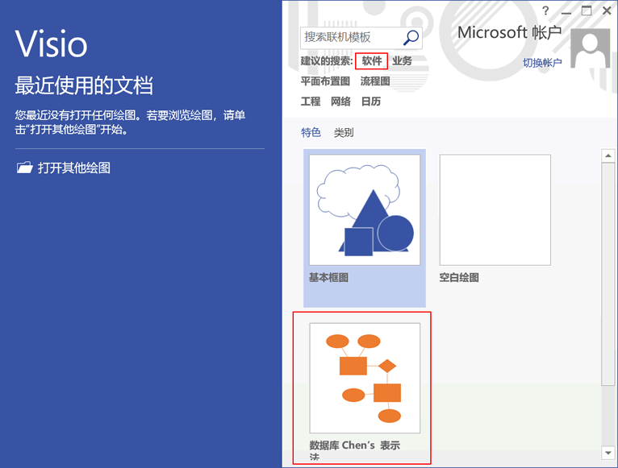
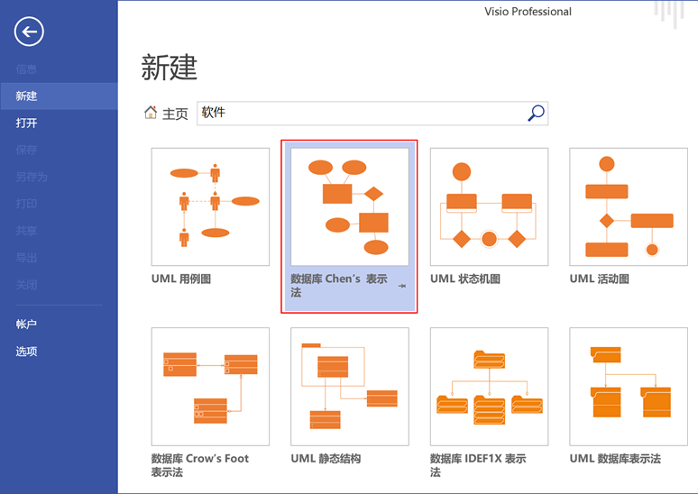
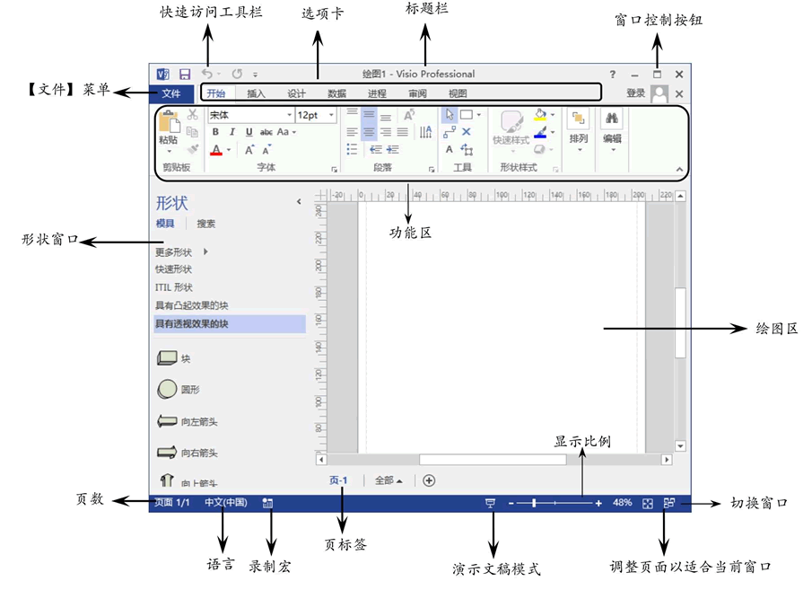
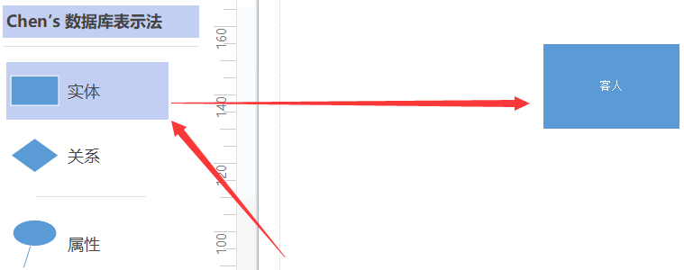
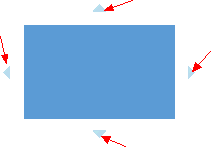

Visio绘制E-R图和数据库模型图具体步骤
本节以 Visio 2013 版本为例进行讲解，主要介绍如何使用 Visio 设计 E-R 图和数据库模型图。
点击“软件“后会显示有关软件的所有模板，双击“数据库Chen's表示法”创建模板，如下所示。
为了让大家更好的使用，对功能区的说明如下：
可以将鼠标悬浮在图形上，会提示在哪个方向画，以及要画什么图形，这样可以提高我们的绘画效率。
创建模板后左侧出现对应的图形，点击想要的图形拖动到绘图区即可。
说明：“Crow’s Foot数据库表示法”，“IDEF1X数据库表示法”和“UML数据库表示法”三种模型基本相同，不同之处在于实体间的连接线形状和含义不一样。具体可学习 UML 类图中连接线的含义，这里就不过多讲解了。
1. 绘制E-R图
首先打开 Mircosoft Office Visio 2013，会出现以下界面，我们选择并点击“软件“。如果本页面有“数据库Chen's表示法”模板，双击创建即可。

点击“软件“后会显示有关软件的所有模板，双击“数据库Chen's表示法”创建模板，如下所示。

为了让大家更好的使用，对功能区的说明如下：

创建相应的模板后，点击左边想要的图形，拖动到绘图区就可以了。形状的大小、样式等都是可以修改的。

可以将鼠标悬浮在图形上，会提示在哪个方向画，以及要画什么图形，这样可以提高我们的绘画效率。

最后将完成的作品保存到想要保存的位置就可以了。
2. 数据库模型图
与绘制 E-R图一样，点击“软件”并选择“Crow’s Foot数据库表示法”或“IDEF1X数据库表示法”或“UML数据库表示法”中的一种，区别不大。创建模板后左侧出现对应的图形，点击想要的图形拖动到绘图区即可。
说明：“Crow’s Foot数据库表示法”，“IDEF1X数据库表示法”和“UML数据库表示法”三种模型基本相同，不同之处在于实体间的连接线形状和含义不一样。具体可学习 UML 类图中连接线的含义，这里就不过多讲解了。
关注公众号「站长严长生」，在手机上阅读所有教程，随时随地都能学习。内含一款搜索神器，免费下载全网书籍和视频。

微信扫码关注公众号